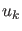
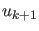
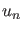
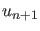

Poincaré section and Poincaré map
A Poincaré section is a surface in phase space that cuts across the flow of a dynamical system.
It is a carefully chosen (in general, curved) surface in the phase space that is crossed by almost
all orbits. It is a tool developed by Poincaré for visualization of
the flow in more than two dimensions. The Poincaré section has one
dimension less than the phase space and the Poincaré map transforms the
Poincaré section onto itself by relating two consecutive intersection points, say
 and . We note that only those intersection points count, which come from
the same side of the section. The Poincaré map is invertible because one gets  from
 by following the orbit backwards. A Poincaré map turns a continuous-time
dynamical system into a
discrete-time one. If the Poincaré section is carefully chosen no information is lost
concerning the qualitative behaviour of the dynamics. For example, if the system is
being attracted to a limit cycle, one observes dots converging to a fixed point in
the Poincaré section.
Subsections